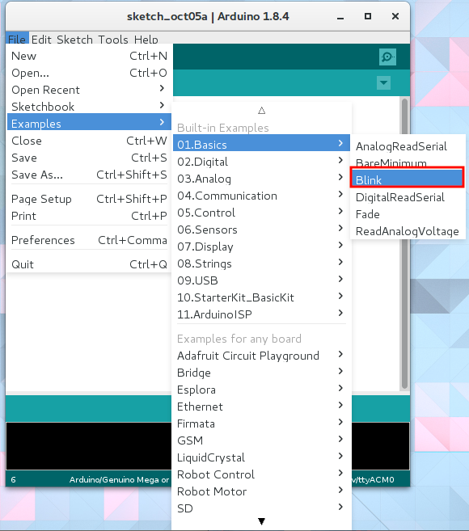
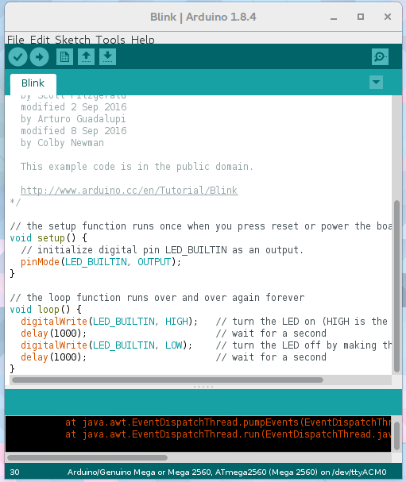
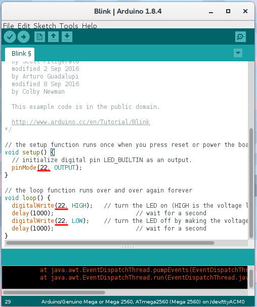

Lチカ
マイコン買ったらまずはこれ，Lチカ（LEDチカチカ）です．動作チェックをするとともに，Arduinoの公式サンプルを呼び出す方法を学びましょう．
1. 公式サンプルからblinkを選ぶ
Arduinoは公式サンプル集が内蔵されています．ファイル→01.Basics→Blinkの順に選択しましょう．なお，追加でインストールしたライブラリなどのサンプルもここに表示されるので，使い方がわからないときは是非活用しましょう． 
Arduino公式のボードを使っている場合はLEDが内蔵されているので，このままで良いです． 
M2Mゲートウェイを使っている場合はLEDの接続されているピン番号が異なるので変更しましょう．ソースコードのLED_BUILTINと書いてある部分を22に変更しましょう．

2. 書き込んで実行する
あとは書き込み設定 を済ませて，書き込みボタンを押すだけ．
1秒ごとにLEDは点滅していますか？